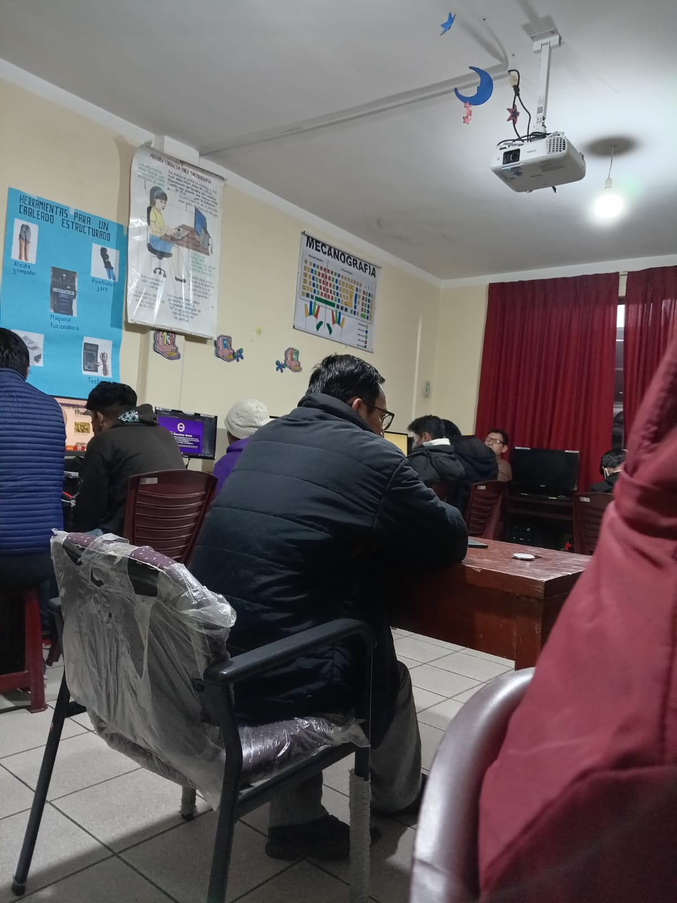

Fe y Alegría es una organización se caracteriza como un movimiento que educativa popular y de promoción social, que tiene su origen en Venezuela y fue fundado en 1955 por el Rvdo. Padre José María Velas; después de más de una decada, en Bolivia, concretamente en la ciudad de La Paz, en 1966 surge Fe y Alegría gracias al impulso de Humberto Portocarrero; al año siguiente en la Villa Imperial, en el domicilio particular de la familia Vera, en calle 1º de mayo, frente a la unidad educativa Fray Vicente Bernedo, zona de San Roque, un 15 de abril de 1967 se crea Fe y Alegría, como una alternativa de crédito educación popular al servicio de los más necesitados, en diferentes ciclos y niveles.
El instituto actualmente tiene una infraestructura adecuada contando con tres Gabinetes de Informatica con equipos de última generación, equipos de Ofimatica para la práctica de la Carrera de Secretariado Ejecutivo, Biblioteca especializada para las carreras de Secretariado Ejecutivo, Contabilidad General e Informatica; para el proceso enseñanza-aprendizaje se utilizan tecnologías de última generación como Data Display y Retroproyectora; sus ambientes son cálidos, con pizarras acrílicas y una infraestructura totalmente nueva.
CAMPO LABORAL
- Empresas proveedoras de soluciones de hardware y software.
- Empresas dedicadas al desarrollo de tecnología para telefonía y telecomunicaciones.
- Empresas que utilicen sistemas de computación en cualquiera de los sectores: gobierno, industrial, manufacturero, bancario, social, salud o telecomunicaciones, entre otros.
Independiente:
- Técnico en reparacion de Computadoras.
- Solucion de Hardware y Software.
- Desarrollador de Páginas web y Sistemas de Gestión.
Con los cambios en el mundo empresarial, el rol de las secretarias se fue alterando, así como las demandas a la hora de contratarlas. Al manejo del teléfono y la agenda ahora se suman tareas vinculadas con la armonización del ambiente laboral, el trabajo en equipo y el manejo y actualización en las nuevas tecnologías.
“De diez años a esta parte, el liderazgo se modificó. Hoy hay una política de Recursos Humanos diferente. Y la expectativa hacia quienes asisten a los jefes también cambió mucho”, explica Marcela Schiumerini, quien planifica la capacitación anual dirigida a asistentes ejecutivos y secretarias del grupo Secretarias y Negocios (SyN).
En este sentido, la experta agrega que, aparte de sus clásicas funciones operativas, actualmente las secretarias cumplen un rol fundamental en la estructura emocional de las organizaciones y en la generación de un buen clima de trabajo. Y sostiene que cada vez es más común que tengan que manejarse con varios superiores a la vez, lo cual hace que se incremente el estrés laboral. “Ya no existe tanto esa relación de uno a uno con el jefe”, señala.

La Carrera de Contabilidad y Finanzas forma gerentes de los Sistemas de Información Contable, capaces de formular y usar la información para el diseño e implementación de estrategias financieras que permiten incrementar el valor de la empresa. El Contador de UPN posee una visión moderna y globalizada acerca de la Auditoría y Consultoría para desarrollar sus actividades asumiendo una actitud ética y proactiva.
-
Para optar por el grado de bachiller en Contabilidad y Finanzas, se requiere:
- Haber cursado y aprobado todos los cursos del Plan de Estudios y haber cumplido con los requisitos contemplados en los Reglamentos de Estudios de la Universidad.
- El ciclo dura 14 semanas y se efectúan 3 ciclos por año, para garantizar un aprendizaje efectivo.
- Haber demostrado el dominio del idioma Inglés a nivel intermedio.
Materias que llevaras en cada materia
SISTEMAS INFORMÁTICOS
|
|
SECRETARIADO
|
|
CONTADURÍA
|